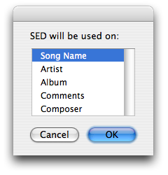
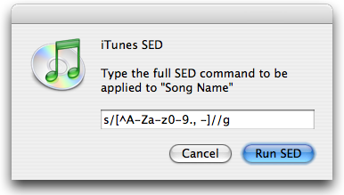

| Download |
iTunes SED, the UNIX geeks must-have script. It brings the power of SED's substitute command s/// to iTunes, so you can make smart batch changes on the tracks ID3 info (Name, Artist, Album, …). We've got regular expressions, back references, modifiers, multiple commands. It's SED babe!
Select the songs and run the script. You'll be asked to choose which field do you want to change.

Now just type your nice SED command. Imagine you are on the Terminal, all the SED commands and features are available. Then press the Run SED button and you'll see the tunes changing.

Note: You may also like iTunes Run Script, a modified version of iTunes SED made by Bobby Holley. It accepts any command besides SED, makes differentiation between input field and output field, and has the ability to read from the filename.